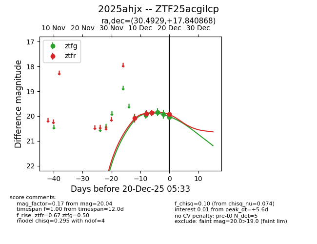
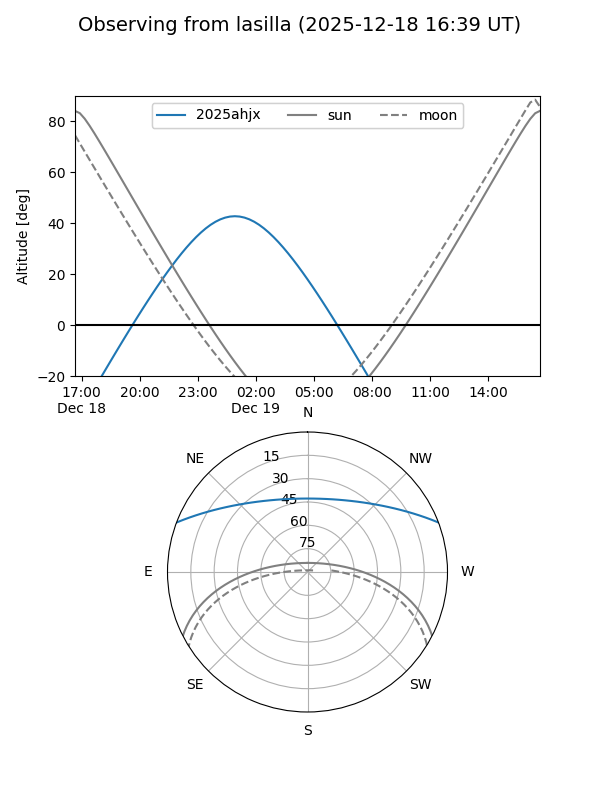
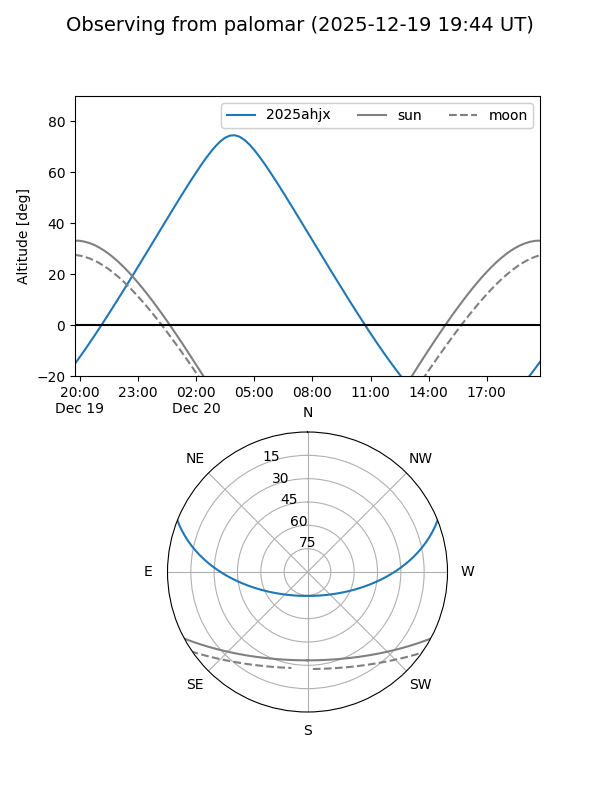
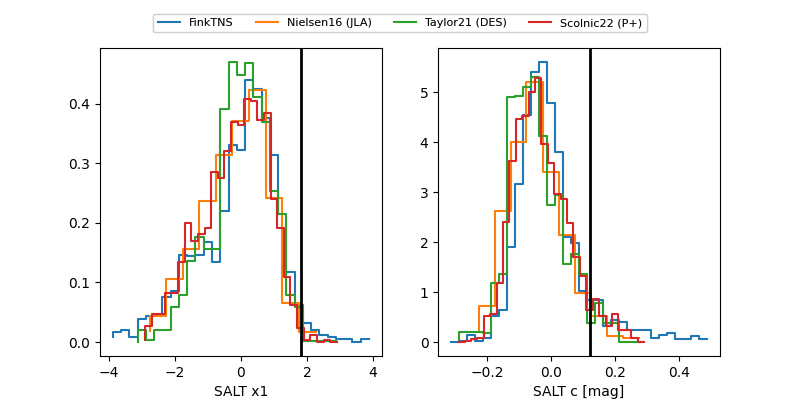

2025ahjx
Target 2025ahjx at 2025-12-18 11:52
Aliases and brokers:
FINK: fink-portal.org/ZTF25acgilcp
Lasair: lasair-ztf.lsst.ac.uk/objects/ZTF25acgilcp
ALeRCE: alerce.online/object/ZTF25acgilcp
TNS: wis-tns.org/object/2025ahjx
YSE: ziggy.ucolick.org/yse/transient_detail/2025ahjx
alt names
ZTF25acgilcp (ztf,fink_ztf)
2025ahjx (tns,yse)
Coordinates:
equatorial (ra, dec) = 30.4929,+17.84087
equatorial (HMS+DMS) = 02:01:58.29,+17:50:27.13
galactic (l, b) = (145.7214,-41.88841)
Photometry
last ztfg=19.92, ztfr=19.86
4 ztfg, 3 ztfr detections
Lightcurve

Visibility


Additional plots
